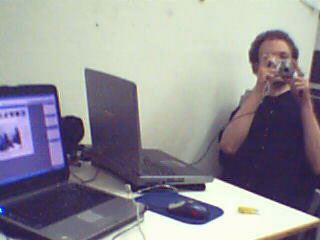
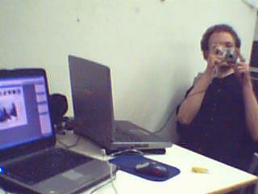

This entry was posted
on Thursday, August 4th, 2005 at 7:11 pm and is filed under General.
You can follow any responses to this entry through the RSS 2.0 feed.
You can leave a response, or trackback from your own site.
lol la photo de jah dans le couloir avec l’ordi, ca fais genre la pub du gars qui est visite un musée virtuellement
bref ambiance detendu apperement, c cool, nous aussi c’est comme ca, enfin quand le patron n’engueule pas les clients recalcitrants mdrrrr, ha oui faut dire aussi que c’est assez tendu entre le patron et un associé (c ca chris ? si je ne m’abuse …)
hey sinon, seb je suis d’acord avec toi, faut vraiment ke tu fasses qq chose avec tes cheveux jah LOL ^^ et vincent aussi d’ailleur … enfin je peut parler aussi … :/
au fait, vous mettrez les photos en ligne ? en hight qualite ? ca serais bien
bon jvais ranger mon appart avant ce weekend :s !!!
C ce que j’ai fait, chuis allé chez le couptif et à la nénette jlui demande de me couper juste les pointes…
Résultat des course: cette salope je v la traquer, la séquestrer et la défenestrer!!!!!! Grosse pute!!! Maintenant je les ai encore plus courts qu’à la rentrée septembre dernier……… Putain chuis deg g vraiment les boules


 
 

Bande de Gloumouths !!!!!
JA, rase toi la tête!!!!!
lol la photo de jah dans le couloir avec l’ordi, ca fais genre la pub du gars qui est visite un musée virtuellement
bref ambiance detendu apperement, c cool, nous aussi c’est comme ca, enfin quand le patron n’engueule pas les clients recalcitrants mdrrrr, ha oui faut dire aussi que c’est assez tendu entre le patron et un associé (c ca chris ? si je ne m’abuse …)
hey sinon, seb je suis d’acord avec toi, faut vraiment ke tu fasses qq chose avec tes cheveux jah LOL ^^ et vincent aussi d’ailleur … enfin je peut parler aussi … :/
au fait, vous mettrez les photos en ligne ? en hight qualite ? ca serais bien
bon jvais ranger mon appart avant ce weekend :s !!!
++
Hey guys,
ca m’a fait plaisir de parler avec vous cet aprêm .
.
Donc peut-être qu’on peut organiser une soirée quand vous serez de retour ?
Courage pour les derniers jours !
+
+
lol faut vous couper tous les deux les cheveux oui, c’est urgent xD
toutefois votre stage a l’air cool
C ce que j’ai fait, chuis allé chez le couptif et à la nénette jlui demande de me couper juste les pointes…
Résultat des course: cette salope je v la traquer, la séquestrer et la défenestrer!!!!!! Grosse pute!!! Maintenant je les ai encore plus courts qu’à la rentrée septembre dernier……… Putain chuis deg g vraiment les boules